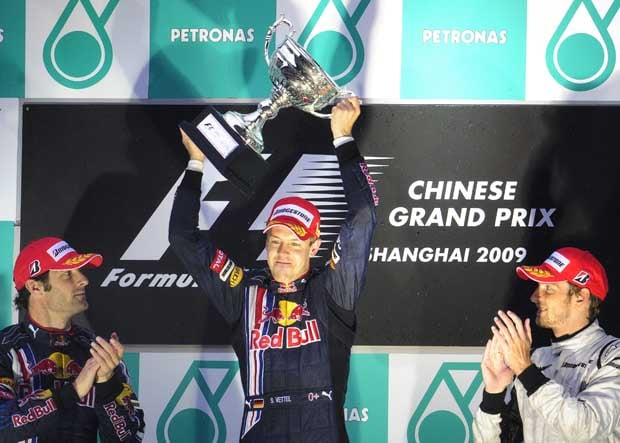
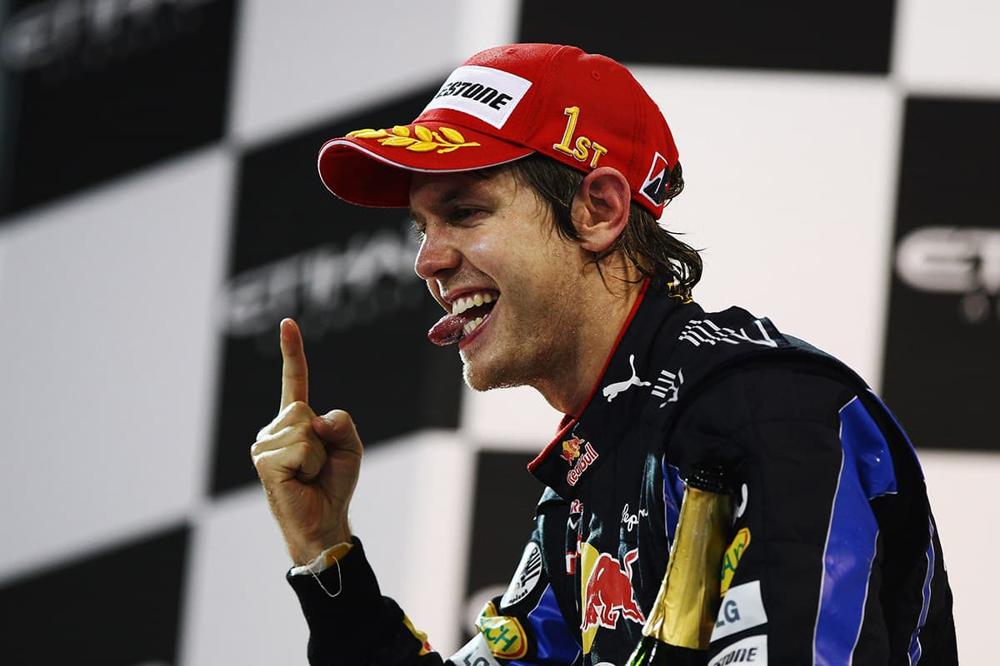
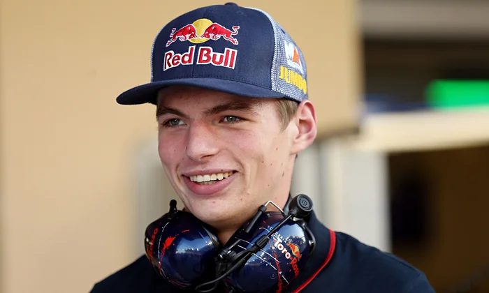

RedBull Racing

The History of RedBull
Red Bull was originally a sponsor for the Sauber team in 1995 but became a team in 2005 and has been a dominante force for most of their time in Formula 1.
Early Days
Red Bull bought Jaguar Racing and rebranded it as Red Bull Racing for their first season in 2005 with drivers David Coulthard and Christian Klien who shared his seat with Vitantonio Liuzzi. In their first season they amassed more points than Jaguar had in 2003 and 2004 and even challenged for podiums occasionally. At the end of 2005 they hired Adrian Newey who is one of the best engineers in the sport but due to the Ferrari engine they only finished 7th in the standings

Renault Engines
2007 saw the debut of the Newey designed RB3 driven by David Coulthard and Mark Webber which lead them to finish 5th in the standings however 2008 was not so good. Red Bull scored just 5 points in the first 10 races and Toro Rosso (the Red Bull 'B team') had overhauled their total by the end of the season and young talent Sebastian Vettel won the Italian Grand Prix becoming the first Red Bull-owned team to win a race. For the 2009 season Coulthard was replaced by Vettel who also went on to win Red Bull's first race at the Chinese Grand Prix that ended up being a 1-2 finish for the team. By the end of the season Vettel came second in the championship with Webber in forth and the team finishing second in the constructors.
Vettel Donimation
The 2010 season was a 5 way battle for the title between both Red Bull drivers, both McLaren drivers (Button and Hamilton) and Ferrari driver Fernando Alonso. The championship was decided at the last race in Abu Dhabi where Vettel needed Alonso to finish out of the top 4 and he did which secured Vettel's first title and making his the youngest world champion. Vettel defended his world title in 2011 after winning 11 of the seasons races and achieving 15 pole posistion breaking Mansell's 1992 record and secured the constructors. In 2012 Vettel won the drivers' championship for the third consecutive season making him the youngest triple world champion surpassing Ayrton Senna. Over the years Webber and Vettel had been rivals and at the 2013 Malaysian Grand Prix Vettel disobeyed team orders 'Multi-21' and overtook Webber forthe lead which caused a lot of tension between the drivrs and in the team especially after Vettel, in an interview, said "[he] won't apologise for winning". 2013 was also the year Vettel got the most hate, he was frequently booed anf was seen as the villan of Formula 1. Despite that he still won both championships for the forth consectutive year.
Max and Co
After Webber left Daniel Riccardo relapced him at Red Bull and outperformed Vettel who left for Ferrari for 2015. A Red Bull junior Daniil Kvyat joined the team but was replaced by Max Verstappen half way through the 2016 season. Verstappen was more of a challenge for Riccardo and pushed him to driver better and both drivers stayed with the team until the end of 2018. Riccardo had a lot of talent and was supposed to be Red Bull's focus to become world chmpion however he believed the team prioritised his younger teamate so he left for Renault. He was replaced by Pierre Gasly from the junior team but he was replaced by Alex Albon half way through the season. By the end of the 2020 season Verstappen finished third compared to Albon's seventh with half of Verstappen's points. In 2021 Albon was replaced by Sergio Perez who finished forth by the end of the year. The title fight was between Verstappen and Hamilton that year ending dramatically in Abu Dhabi with a last lap overtake on Hamilton after a safty car left them one laps racing left which earned Verstappen his first world title.
Honda Engines and Verstappen Domination
Since the 2022 season Red Bull has used Honda engines and 2025 is their last season with them. Despite a good start of the year for Ferrari and Charles Leclerc, Verstappen chaimed both titles for Red Bull. 2023 was the most dominante season in Formula 1 history; out of the 22 races Red Bull won 21 of them and only 2 of the 21 were Perez the other 19 were Verstappen. The other race was won by Carlos Sainz for Ferrari. You can guess who won the championships that year. 2024 had some more challenges with both Mercedes drivers (Hamilton and Russell), both McLaren drivers (Norris and Piastri), both Ferrari drivers (Leclerc and Sainz) and both Red Bull drivers winning races however the drivers was till won by Verstappen in Las Vegas. However, due to Perez's poor performance the battle forth constructors was between McLaren and Ferrari in Abu Dhabi that went the was of the Papayas.